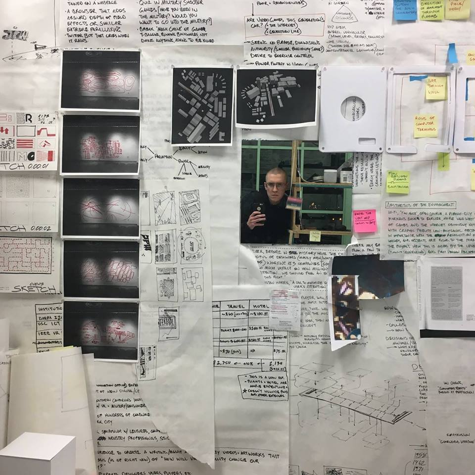

About Me
James Waite is a multidisciplinary artist who graduated from the Cleveland Institute of Art in 2017 with a Bachelor Degree in Fine Arts from the Drawing Department with an emphasis in Visual Culture, Art and History. He has had work shown in numerous exhibitions, including the 69th Student Independent Exhibition at the Reinberger Gallery at the Cleveland Institute of Art. He also has had work shown at Forum Artspace at the 78th St Studios, as well as at Waterloo Native Annex within the Waterloo Arts District in Cleveland, Ohio.
He has been awarded several merit and portfolio based scholarships through the Cleveland Institute of Art, including the Francis J. Meyers Scholarship for Excellence in Drawing. He has held several Internship positions at major art institutions in Cleveland, including the Museum of Contemporary Art Cleveland, The Morgan Art of Papermaking Conservatory and Educational Foundation, as well as SPACES Gallery in Cleveland. He also served as a Committee Head for the 70th and 71st Student Independent Exhibitions, where he handled sponsorship and fundraising responsibilities in cooperation with the other three Committee Heads.
Contact Me